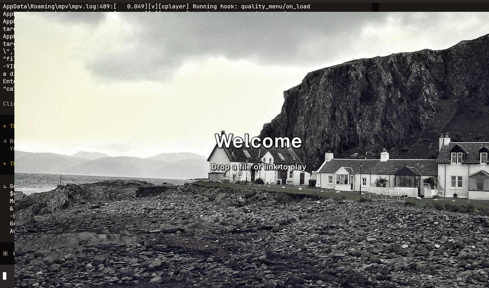
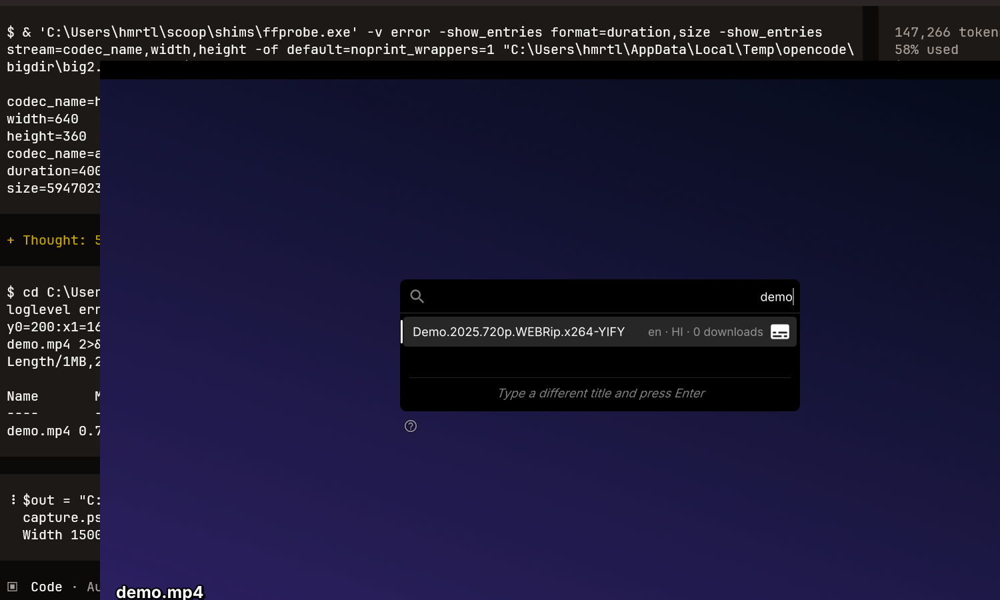
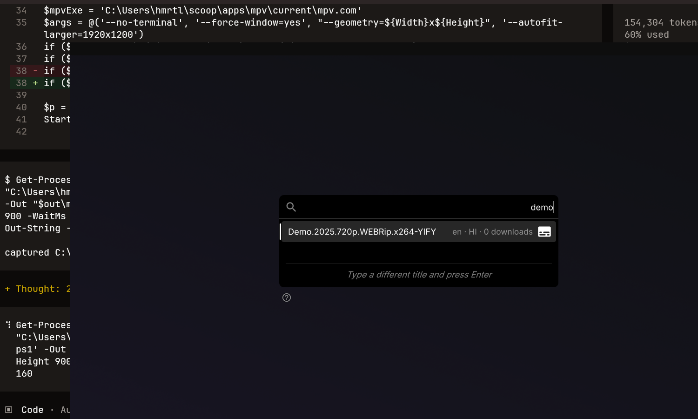
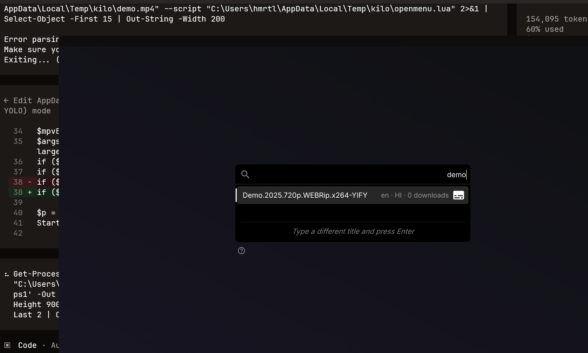

Windows · PowerShell
irm https://raw.githubusercontent.com/ratuuul/mpv-redesigned/main/install.ps1 | iex
Navigate
mpv 0.41-dev · libplacebo 7.358
Liquid Glass controls that stay on screen, a full-quality video pipeline, a WASAPI audio chain, subtitle typography somebody chose on purpose, and a YouTube client with a real format picker. One configuration folder, one command to install it.
irm https://raw.githubusercontent.com/ratuuul/mpv-redesigned/main/install.ps1 | iex
curl -fsSL https://raw.githubusercontent.com/ratuuul/mpv-redesigned/main/install.sh | bash

The idle screen, with a fetched photograph behind the prompt
01 / What you get
Every card below is a setting you can read in the repository, on a file that explains why it exists. Nothing is hidden in a binary, and every one of them can be switched off again.
02 / Inside the configuration
The configuration is split by domain instead of by length. A renderer option lives with the renderer options, a subtitle option lives with the subtitle options, and the master file only includes the rest.
A / Includes
mpv.conf is a short master file that includes the five
conf files. Nothing is set twice and nothing is set in two places.
B / Reasoned options
Every non-obvious line carries the reason it exists. The comment above the yt-dlp options explains why the JavaScript runtime line must not be removed.
C / One keymap
input.conf is the only place a key is bound.
nav_shim.lua detects the active skin and forwards the same
bindings to it, so switching skins never changes how you drive the player.
D / Parked, not deleted
The alternative skin lives in skins/modernz and is moved in
by a single script. Exactly one skin is ever loaded.
03 / Showcase
The skin is best seen moving, but the static frames still say a lot: a control bar that does not black out the picture, overlays that follow the pointer, and panels that belong to the same design.
Nothing loaded, and it still looks finished. A cached photograph sits behind the window with the prompt and the key hints on top.

The control bar stays on screen while the picture plays: a hairline timeline, a soft translucency, and no opaque black slab across the bottom of the frame.

Centred macOS-style overlays appear where the pointer is, with the volume slider drawn as one continuous glass ribbon.

The menu panel matches the skin: a rounded sheet, a hairline border and the same type scale as the rest of the player.
04 / Feature deep dive
Six pieces of the configuration are worth reading closely, because they are the difference between an mpv you tolerate and one you keep open.
Deep dive 01
When there is nothing to play, mpv shows a black rectangle. This configuration fetches a photograph instead, caches it locally, and puts the prompt on top of it. The image is blurred and darkened enough that the text stays readable, and the next photo is one key away.
script-opts / bg.conf
# keywords are comma separated keywords=nature,landscape,minimal,city,night # leave empty for a random photo cache_dir=~~/cache/bg
Deep dive 02
Closing mpv and coming back later should not mean finding the file again. The double click on the window reopens the last media and resumes it at the exact position it was left at, and the saved position deliberately ignores stray volume and mute changes.
config / mpv.conf
save-position-on-quit=yes resume-playback=yes resume-playback-check-mtime=no write-filename-in-watch-later-config=yes watch-later-options=start,speed,pitch,aid,sid,sub-delay,sub-scale
Deep dive 03
The format menu lists the formats the server actually offers and switches between them without reloading the video. The subtitle menu lists every language the video carries, creator uploaded and auto generated, with a separate track for the secondary language.
config / mpv.conf
ytdl-raw-options=sub-langs=(en|ja|de|es|fr|it|ru|pt|pl|nl|sv|tr|ko|zh).*,js-runtimes=node
The JavaScript runtime line is not optional. Without a named runtime, modern yt-dlp cannot solve the signature challenges and every video comes back without usable formats.
Deep dive 04
Subtitles are set in Geist Medium at 40, in a warm off-white, with a hairline outline and a soft shadow so they survive any background. Margins are forced so a 2.35 to 1 film keeps its captions inside the letterbox instead of floating over the image.
config / conf / subtitles.conf
sub-font=Geist Medium sub-font-size=40 sub-color=FCF3E8 sub-border-size=1.2 sub-shadow-size=1.6 sub-ass-force-margins=yes
Deep dive 05
d3d11 output with d3d11va decoding is the single biggest win on an integrated GPU with shared memory. On top of that sits the full quality stack: EWA Lanczos for luma, spline36 for chroma, mitchell for downscaling, and anti-ringing so the sharpening does not ring.
config / conf / video.conf
vo=gpu-next gpu-api=d3d11 gpu-decoder=d3d11va scale=luma:ewa_lanczos scale-chroma=spline36 dscale=mitchell dither=fruit tone-mapping=spline
Deep dive 06
The control bar and the timeline are translucent and stay on screen while the picture plays, but the overlays are pointer driven: they appear where the mouse is and fade away when it leaves. A speed meter with a spring needle sits at the centre of the screen while the speed changes.
config / mpv.conf
# the skin draws the controls, so mpv's own is off osc=no osd-bar=no # keep the window interactive after a file ends keep-open=yes keep-open-pause=yes
05 / Key bindings
Every binding below is real: a line in input.conf, a binding
registered by one of the shipped scripts, or a player default the configuration deliberately keeps.
Search by key, action or group, and sort by any column.
0 of 0 bindings
Generated from the shipped configuration.
| Key | Action | Group | Source |
|---|
No binding matches that search.
The complete list is regenerated from input.conf by the tooling in the repository.
06 / Install
The installer backs up whatever it finds, deploys the configuration, and starts mpv once to prove the file parses. It never asks for administrator rights, and it never writes outside your own profile.
irm https://raw.githubusercontent.com/ratuuul/mpv-redesigned/main/install.ps1 | iex
Run it from Windows PowerShell 5.1 or PowerShell 7, not from cmd. A preview that changes nothing is one switch away.
git clone --depth 1 https://github.com/ratuuul/mpv-redesigned.git ~/.config/mpv
The player reads that directory directly, so there is nothing to install and nothing to run. The configuration is platform neutral; only the one-line installer in the repository is Windows specific.
| Flag | PowerShell switch | What it does |
|---|
Uninstall and rollback
The uninstaller moves the installed configuration into a timestamped backup folder instead of deleting it, so the rollback path stays open. Add the purge switch to delete it outright, after a confirmation. The player itself is left alone and stays installed.
powershell -ExecutionPolicy Bypass -File .\uninstall.ps1
07 / FAQ
Where the files live, what gets downloaded, what leaves the machine, and how to walk it all back.